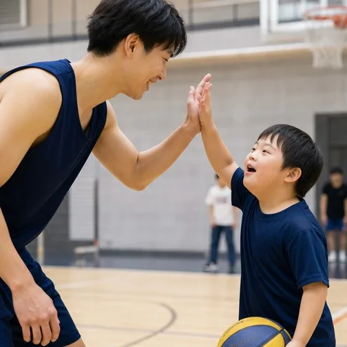
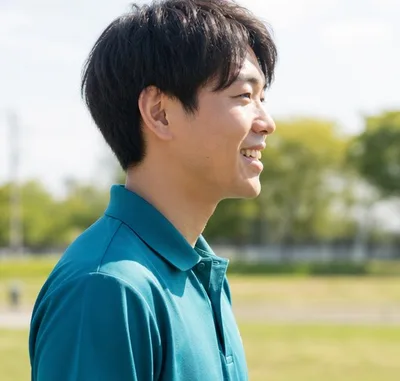
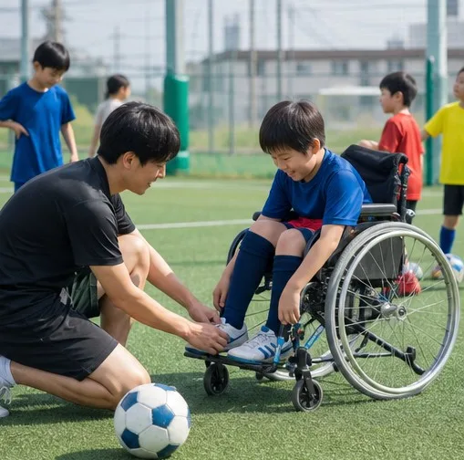
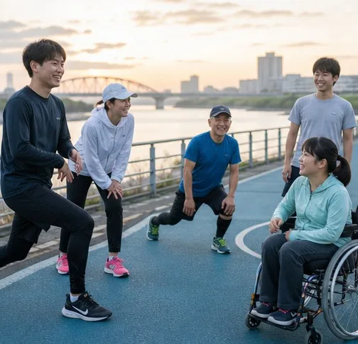
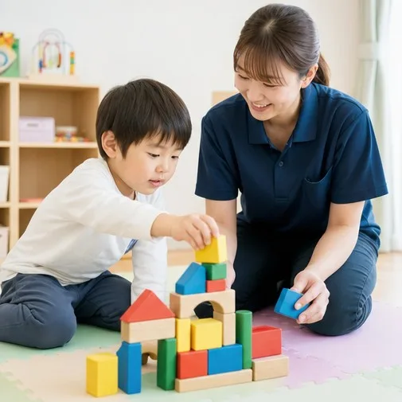

( スポーツ )
MEETS
リバーオウルズ
できなかったことが、あ
る日
ふっとできるように
なる。そ
の瞬間に立ち会
えることが、
私たちの仕事のいちばんの喜
びです。障がいが
あっても、
年齢を重ねても、人はま
だ伸
びていける。だから通う場所
も、
働く場所も、夢中になれ
る場所も、
この町にひとつず
つ増やしています。
コラボレーション
ひとりでは、届かない場所がある。

スポーツクラブ、地元の企業、農家さん。分
野のち
がう仲間と組むことで、利用者さんが
立てる舞台は、
もっと広くなると考えていま
す。

( スポーツ )
MEETS
リバーオウルズ

( スポーツ )
MEETS
ミナモ・ブレイズ

( スポーツ )
MEETS
カワセミランナーズ
展開する事業
その人のペースで、その人らしく、伸びていける場所を、町じゅうに。

子どもの療育から、働く場所、暮らす家、訪
問看護
まで。年齢や障がいの種類で線を引か
ず、その人の
いまに合った支えを、長岡の町
のなかに用意してい
ます。
お問い合わせ
いっしょに、次の一歩をつくりませんか。
協業・協賛のご相談、視察・報道のご連絡、事業
所の見学
のお申し込みは、こちらのフォームから
受け付けています。